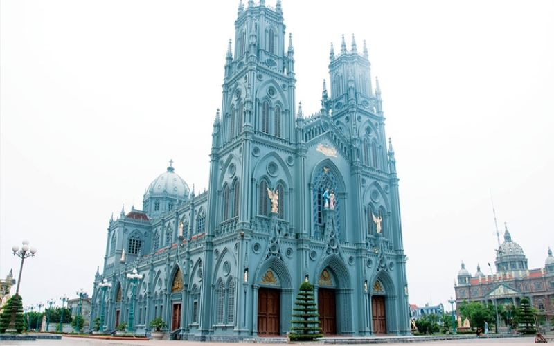
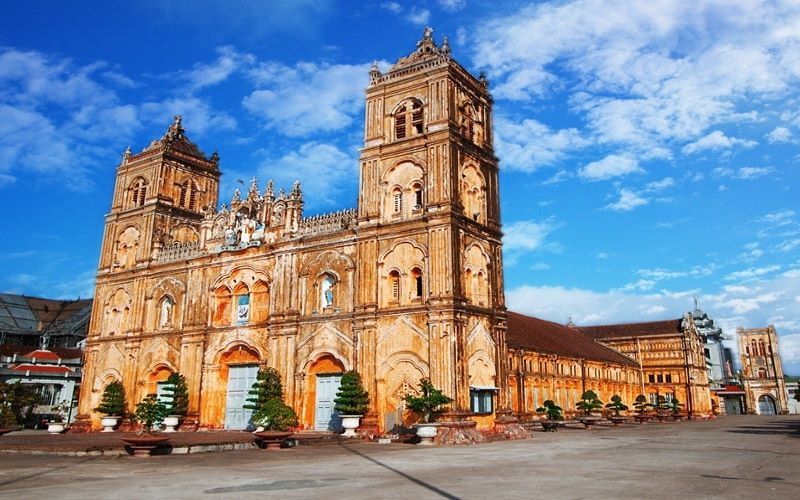

Lạc giữa trời Tây ở giáo xứ Hưng Nghĩa Nam Định đẹp tựa lâu đài Hogwart
Một trong những thánh đường đẹp nhất Đông Dương.
Kiến Trúc độc đáo của Đồng bằng sông Hồng.
Nhà thờ Hưng Nghĩa: Giáo xứ Hưng Nghĩa Nam Định được mệnh danh là lâu đài băng giá với vẻ đẹp nguy nga, tráng lệ, được xây dựng với lối kiến trúc Gothic nổi tiếng của phương Tây.
Vương cung thánh đường Phú Nhai: Luôn là một công trình tín ngưỡng, điểm tham quan du lịch của du khách gần xa. Trong tâm trí của nhiều người, Tòa Thánh Phú Nhai có sức lôi cuốn huyền bí.
Nhà thờ Bùi chu: Đây là nơi có những nóc chuông vút cao trên nền trời xanh thẳm hay soi mình bên dòng sông và những mái vòm không thua kém gì những thánh đường cổ kính Âu Châu.
